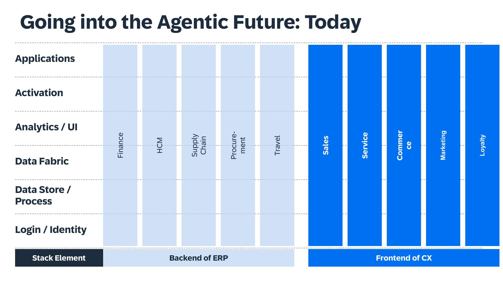
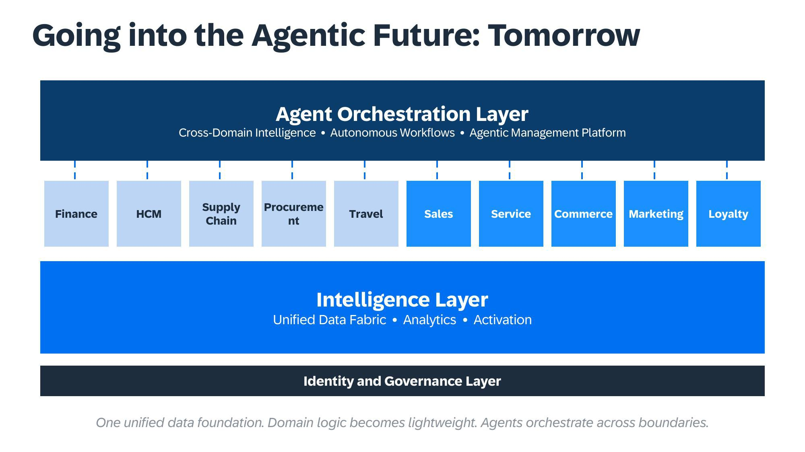
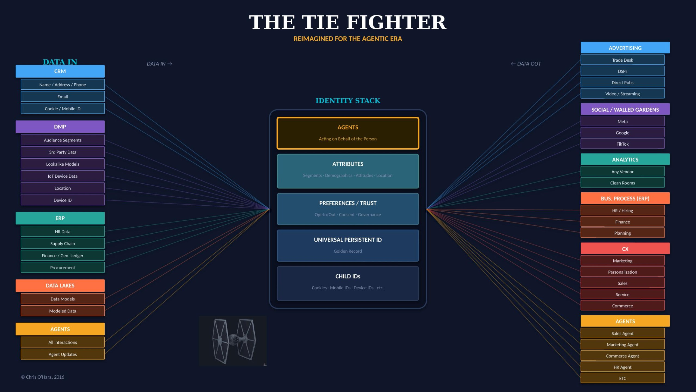

Introducing the AMP
The Agentic Management Platform — a unified architecture for the agent era
"A DMP knew your audience. A CDP knew your customer. An AMP knows your business."
From the authors of Customer Data Platforms (Wiley, 2020) and the forthcoming Agent Driven: The Enterprise Playbook for the Agentic Era
The Third Act
The story of enterprise technology has unfolded in three acts — though only now, looking back, can you see the trajectory.
Act One: Data Driven (2015–2020). The DMP era. We built infrastructure to capture behavioral data across every digital touchpoint. Cookies, device graphs, third-party segments. The goal was simple: know the customer. Build anonymous profiles. Target efficiently. The DMP was the hero, and the scope was narrowly digital, narrowly marketing, narrowly about matching an impression to an eyeball.
Act Two: Customer Driven (2020–2025). The CDP era. We realized that knowing anonymous segments wasn't enough — we needed to know individuals. First-party data. Identity resolution. Golden records. Journey orchestration. The goal evolved: unify data into actionable profiles that could power personalization across every channel. The CDP was the hero. But even as CDPs matured, a nagging question emerged: why did every enterprise application — finance, supply chain, HR, commerce — still hoard its own data in its own stack, connected to the rest of the business by brittle integrations and overnight batch jobs?
Act Three: Agent Driven (2025+). Something shifted. And it wasn't just the customer who changed — it was the entire operating model. AI agents don't just triage inboxes and compare sneaker prices. They reconcile invoices, optimize procurement contracts, reforecast demand, and route service tickets — all while reasoning across datasets that used to live in completely separate worlds. The beautiful applications we built? The agents don't see them the way humans do. They see data. They see APIs. They see structured knowledge, or they see nothing at all.
The question is no longer "how do we reach the customer?"
It's "how do we build an enterprise that agents can actually operate?"
The Trilogy Arc
| Era | Philosophy | Platform | Scope |
|---|---|---|---|
| 2015–2020 | Data Driven | DMP | Marketing |
| 2020–2025 | Customer Driven | CDP | Marketing + CX |
| 2025+ | Agent Driven | AMP | The Enterprise |
Notice the scope column. The DMP served marketing. The CDP served marketing and customer experience. The AMP serves the enterprise — because agents don't respect functional boundaries, and the platform that supports them can't either. That's why we chose Management for the M, not Marketing. A DMP managed audience data. A CDP managed customer data. An AMP manages the business intelligence and orchestration layer that lets agents operate across every function — from ERP to CX, from finance to field service.
Where We Are Today: The Silo Problem
Before we can talk about what's next, we need to be honest about what we've built.
Look at any large enterprise's technology stack today — SAP, Oracle, Salesforce, Workday, it doesn't matter — and you'll find the same architecture repeated vertically across every functional domain. Finance has its own application layer, its own analytics, its own data store, its own activation model, its own identity system. So does Human Capital Management. So does Supply Chain. So does Procurement. So does Sales. So does Service.

Each pillar is a self-contained vertical stack, running from Login and Identity at the base up through Data Store, Data Fabric, Analytics, Activation, and finally the Application layer at the top. The "Backend of ERP" — Finance, HCM, Supply Chain, Procurement, Travel — sits in one world. The "Frontend of CX" — Sales, Service, Commerce, Marketing, Loyalty — sits in another. They share an org chart and a general ledger, but precious little else.
This architecture made sense when applications were built for human operators who lived inside a single domain. The Finance team used the Finance stack. The Marketing team used the Marketing stack. Nobody expected these systems to talk to each other in real time, because the humans operating them didn't need to. Coordination happened in meetings, in email chains, in quarterly business reviews where someone pulled data from six different systems into a PowerPoint deck and called it a "360-degree view."
But agents don't operate in one domain at a time. An intelligent planning agent doesn't just look at financial data — it reasons across supply chain signals, procurement costs, demand forecasts, and sales pipeline simultaneously. A customer service agent doesn't just resolve a ticket — it checks inventory availability, assesses return logistics, evaluates customer lifetime value, and adjusts next-best-action in the same breath. Agents are natively cross-functional, and they are crashing into an architecture that is structurally siloed.
The result is predictable: agents that can only see what lives in one stack become narrow, brittle, and unreliable. They hallucinate not because their models are bad, but because they're reasoning on incomplete data. The silo problem isn't just a data integration problem anymore. It's an intelligence problem.
Where We're Headed: The Unified Architecture
The future architecture inverts the stack.
Instead of ten vertical pillars — each running its own full infrastructure from identity to application — you build from a shared horizontal foundation outward. The bottom four layers of the old stack (Login/Identity, Data Store, Data Fabric, Analytics) collapse into two unified horizontal layers. Domain-specific logic doesn't disappear; it becomes lightweight, sitting on top of shared infrastructure rather than duplicating it. And above everything, a new layer emerges that never existed before: the Agent Orchestration Layer, spanning every domain simultaneously.

Here's how it works, from the bottom up:
Identity and Governance Layer. The shared foundation. Not just login credentials — this is the unified identity, access control, data governance, and trust model that every application, every agent, and every user shares. In the old architecture, each pillar managed its own identity. In the new one, identity is a platform service. You don't authenticate to Finance separately from Sales. You authenticate once, and your authority scope — what you can see, what you can do, what an agent can do on your behalf — propagates everywhere.
Intelligence Layer. This is where the old Data Store, Data Fabric, and Analytics layers merge into a unified platform. One data fabric. Shared analytics. Cross-domain activation. In the old world, the Finance data fabric and the Sales data fabric were different systems with different schemas and different refresh cadences. In the new world, there is one semantic layer, one set of business definitions, one knowledge graph that spans the enterprise. This is the layer where DMPs and CDPs dissolve into something larger — not disappearing, but becoming components of a unified intelligence infrastructure that serves every domain, not just marketing.
Domain Logic. Finance, HCM, Supply Chain, Procurement, Travel, Sales, Service, Commerce, Marketing, Loyalty — all ten domains still exist. But they're thinner now. They're the business rules, workflows, and application logic specific to each function, sitting atop the shared intelligence layer rather than running their own complete stacks. Think of them as apps on a platform, not empires unto themselves.
Agent Orchestration Layer. The new top of the stack. Cross-domain intelligence. Autonomous workflows. The Agentic Management Platform. This is where agents operate — not inside one domain, but across all of them simultaneously, connected by the dashed lines in our diagram to every domain below. An agent in this layer can reason across Finance and Supply Chain and Sales in a single operation, because the underlying intelligence layer gives it a unified view of the enterprise.
This is the layer that didn't exist before — because it couldn't exist before. You can't build cross-domain orchestration on top of ten disconnected vertical stacks. You need the unified foundation first.
Framework: Native vs. Assembled
There's a reason this architecture matters competitively. Most enterprise vendors got to "unified" by acquiring their way there — buying a data warehouse company, bolting on an analytics startup, adding a governance tool through partnership. The result is an assembled architecture: technically connected but semantically fragmented, where the data fabric from the acquired company speaks a different language than the planning engine from the original platform.
The alternative is a native architecture — one where the intelligence layer, the governance layer, and the orchestration layer were designed from the ground up to share semantics, share metadata, and share a single definition of truth. Native architectures are deterministic: when the agent queries the intelligence layer, it gets one answer, derived from one semantic model. Assembled architectures are probabilistic: the agent gets an answer that depends on which system it happened to query first, which integration pipeline ran most recently, and whether the ETL job completed before the planning cycle kicked off.
Agents need deterministic infrastructure. They can't reconcile conflicting answers from three different systems the way a human analyst can. They need one source of truth, natively constructed — not assembled from acquisitions and held together with middleware.
The AMP Stack
The Agentic Management Platform isn't just for marketing anymore. The "M" used to stand for Marketing — back when we first sketched this framework, the scope was customer data, activation channels, and attribution models. But agents don't stop at the marketing boundary. They operate across the enterprise. So the M now stands for Management, because the same architectural logic that unified customer data in the CDP era now needs to unify enterprise intelligence in the agent era.
A CDP knew your customer.
An AMP knows your business.
Layer 1: Identity and Governance
The trust layer. Unified identity, access control, data governance, compliance, and authority scoping — for humans and their agents. In the DMP era, identity meant cookies. In the CDP era, identity meant golden records. In the AMP era, identity means a triple construct: the human, their agent, and the authority scope governing what the agent can do. And this applies not just to customers but to employees, partners, suppliers, and every entity — human or machine — that interacts with the enterprise. Without this layer, agents are just clever scripts running loose. With it, they're governed, auditable, and enterprise-grade.
Layer 2: Intelligence
The knowledge layer. Unified data fabric, business semantics, knowledge graphs, analytics, simulations, and data products. This is where the enterprise's collective knowledge lives — structured, queryable, and available to any agent that needs it. This is also where the DMP and CDP heritage lives on, absorbed into something bigger. The DMP's audience segments? They're a data product in the intelligence layer. The CDP's golden record? It's a node in the knowledge graph. They didn't disappear. They became components of a much richer semantic infrastructure.
Layer 3: Agent Orchestration
The action layer. Cross-domain intelligence. Autonomous workflows. Continuous learning. This is where agents — your enterprise agents, your customers' agents, your partners' agents — actually do work. Adaptive experiences that adjust in real-time. Decisions that would have taken weeks of cross-functional meetings compressed into seconds. This is the layer where the handshake happens: where your agents meet the world's agents, and where the quality of your underlying intelligence layer determines whether you win or lose.
The TIE Fighter: Data Activation Reimagined
If you've spent time in the data-driven marketing world, you know the TIE Fighter diagram — the canonical visualization of how data flows into an identity core, gets resolved and enriched, and then flows back out through activation channels. It was born in the DMP era, evolved through the CDP era, and now it needs to evolve again.

In the agentic version, three things change:
Agents as data sources. On the left wing — the "DATA IN" side — agents now generate interaction data alongside CRM records, DMP segments, ERP data, and data lakes. Every agent interaction, every agent-initiated transaction, every agent preference signal becomes a data input. The volume and velocity of this data will dwarf what humans generate, because agents don't sleep, don't take lunch breaks, and don't forget to log their activities.
Agents inside the identity stack. At the center of the TIE Fighter — the identity core — there's a new layer at the top: AGENTS, "Acting on Behalf of the Person." The identity stack now resolves not just who someone is (Universal Persistent ID, Child IDs, Attributes, Preferences) but who is acting on their behalf and with what authority. This is the triple identity: human + agent + authority scope. The identity graph gets a new dimension.
Agents as activation channels. On the right wing — the "DATA OUT" side — agents join the traditional activation channels. Alongside Advertising, Social/Walled Gardens, Analytics, Business Process, and CX, there's now an AGENTS section: Sales Agent, Marketing Agent, Commerce Agent, HR Agent, and more. These aren't just chatbots. They're autonomous activation endpoints that receive data products, make decisions, and take actions. The activation model shifts from "push a message to a human" to "deliver structured intelligence to an agent that acts on it."
The TIE Fighter still works. The architecture is sound. But the data flows have changed — agents are simultaneously producing data, resolving identity, and consuming activation. They're everywhere in the diagram, and the enterprise that doesn't account for them in its data architecture will find its identity graph incomplete, its activation model obsolete, and its agents operating blind.
The Infrastructure Gap
Here's the uncomfortable truth: everything you built for the human experience is largely invisible to agents.
| What You Built (Human-Facing) | What the Agent Needs |
|---|---|
| Beautiful application UIs | Structured data APIs (machine-readable) |
| Personalized dashboards and reports | Real-time queryable knowledge graphs |
| Journey orchestration across channels | Sub-second cross-domain query latency |
| Brand storytelling and creative campaigns | Trust signals (verified data, certifications, SLAs) |
| Multi-step approval workflows | Agent-compatible decision protocols |
| Quarterly business reviews | Continuous, real-time enterprise intelligence |
You need both. The human interface AND the agent interface.
The infrastructure from the DMP and CDP eras isn't wrong — it's incomplete. It's a foundation, not a finished building. And the gap isn't just in marketing anymore. It's in every function: Finance systems that can't expose their planning models as queryable APIs. Supply chain platforms that can't share demand signals with procurement agents in real time. HR systems that can't surface workforce analytics to planning agents that need to model labor costs against revenue forecasts.
The Five Shifts
The agentic disruption manifests as five concurrent shifts — and they hit every enterprise function, not just marketing:
1. Identity Expands
Your golden record of the customer becomes one layer of a much richer identity model: the human, their agent, and the authority scope governing what the agent can do. But identity now extends beyond customers to employees, partners, suppliers, and their agents too. Every entity that interacts with the enterprise — human or machine — needs a unified identity. The TIE Fighter's identity stack gets a new top layer.
2. Personalization Inverts
Instead of painting personalized pages for human eyes, you structure responses for agent queries. This applies to product catalogs and marketing creative, yes, but also to procurement portals, supplier interfaces, employee self-service, and partner ecosystems. Agents need data, not design. They need schemas, not stories. The enterprise that structures its knowledge for agent consumption wins — across every function, not just the storefront.
3. Journeys Collapse
Multi-week, multi-touchpoint journeys become parallel evaluations completed in seconds — and not just customer journeys. Procurement cycles, planning cycles, hiring workflows, compliance reviews. Any process that involves sequential human evaluation across multiple systems is a candidate for agent-driven compression. The agent evaluates twelve options simultaneously because it can query the intelligence layer across all domains at once.
4. Trust Transfers
Consumers trust their agents. Employees trust their copilots. Partners trust their automated systems. The agent evaluates your trustworthiness through data accuracy, fulfillment reliability, response latency, and API consistency. You can't advertise your way to agent trust. You can't PowerPoint your way there either. You have to perform your way there — with clean data, reliable APIs, and consistent execution across every domain.
5. The Funnel Flattens
And not just the marketing funnel. Every sequential evaluation process — Awareness → Consideration → Decision → Action — becomes a parallel evaluation event when agents handle it. RFPs, vendor selection, budget allocation, workforce planning. The enterprises that structure their data for agent consumption win the parallel evaluation. The ones that don't become invisible to automated decision-making.
The Three Horizons: An Investment Model
Knowing where the architecture is headed doesn't tell you how to get there. Most enterprises can't rip out ten vertical stacks and rebuild from scratch — nor should they. The transition happens in three investment horizons:
The horizons aren't sequential stages that happen one after another. They're concurrent investment streams with different time horizons and different risk profiles. Horizon 1 work should be happening now. Horizon 2 is where the heavy architectural investment goes over the next 12–24 months. Horizon 3 is the prize — the payoff that justifies the investment in the first two.
The Three Moves
The Three Horizons describe the investment sequence. The Three Moves describe what the enterprise actually does at each stage — the organizational transformations required alongside the technical ones:
Move 1: Build Your Stack. This is the technical foundation — the identity layer, the intelligence layer, the governance model. It's the move from assembled to native, from siloed to unified, from human-only to human-and-agent. For most enterprises, this means choosing a platform partner and committing to an architectural direction, not just buying another point solution.
Move 2: Rebuild Your Story. The way you talk about your enterprise — to customers, to partners, to agents — has to change. Your value proposition needs to be machine-readable, not just human-persuasive. Your data needs to tell a story that agents can parse: structured, semantic, queryable. This move rewires how the enterprise communicates its value, from narrative to structured intelligence.
Move 3: Rebuild Your Skills. The people who built the DMP era aren't the same people who'll build the AMP era — or rather, they are, but they need new skills. Data architects need to think in knowledge graphs, not just schemas. Marketers need to understand agent protocols, not just campaign management. IT leaders need to govern agent access, not just human access. The skills transformation is the hardest move, and the one most enterprises underinvest in.
The Job Hasn't Changed
In 1961, Father Harvey Schmitt at the Catholic Diocese of Rockford used an IBM 650 to personalize fundraising letters and achieved an 80% response rate. His operations — data input, storage, processing, activation, engagement, measurement — map perfectly to today's enterprise stack. Not just the marketing stack. The whole thing.
Father Schmitt would understand the AMP. Different speed. Different scale. Different scope. Same logic: know what you're working with, and structure what you do based on what you know.
The technology changes every decade. The job doesn't.
And the job, today, is to build the enterprise infrastructure — from identity to intelligence to orchestration — that serves agents as brilliantly as we learned to serve humans. Not just the customer's agent. Every agent. Everywhere they touch the business.
The enterprises that build AMP infrastructure will thrive. The enterprises that keep running ten vertical stacks for an operating environment increasingly populated by cross-functional agents will find themselves slow, brittle, and invisible to a growing share of automated decision-making.
Not because they did anything wrong. Because they stopped one layer short of where the world was heading.
A DMP knew your audience.
A CDP knew your customer.
An AMP knows your business.
The frameworks in this article — the AMP (Agentic Management Platform), the DMP → CDP → AMP trilogy, the TIE Fighter data activation model, the Native vs. Assembled architectural distinction, the Three Horizons investment model, and the Three Moves transformation framework — are developed in full in Agent Driven: The Enterprise Playbook for the Agentic Era by Christopher O'Hara and Martin Kihn (forthcoming, 2026). The AMP architecture diagrams are © Christopher O'Hara, 2026. The TIE Fighter is © Christopher O'Hara, 2016–2026.